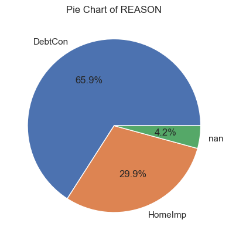
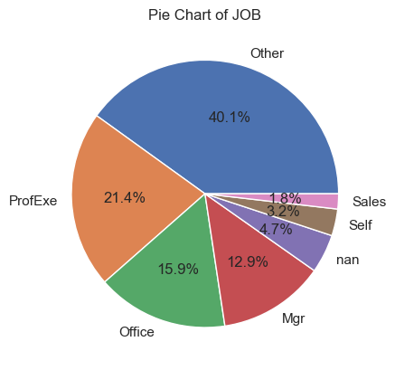
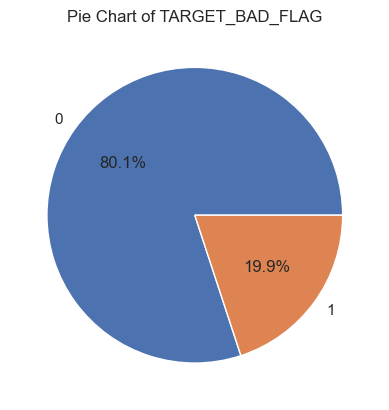
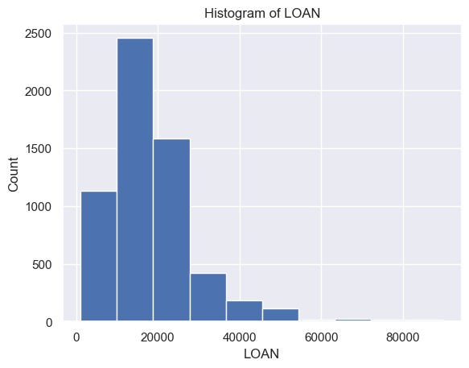
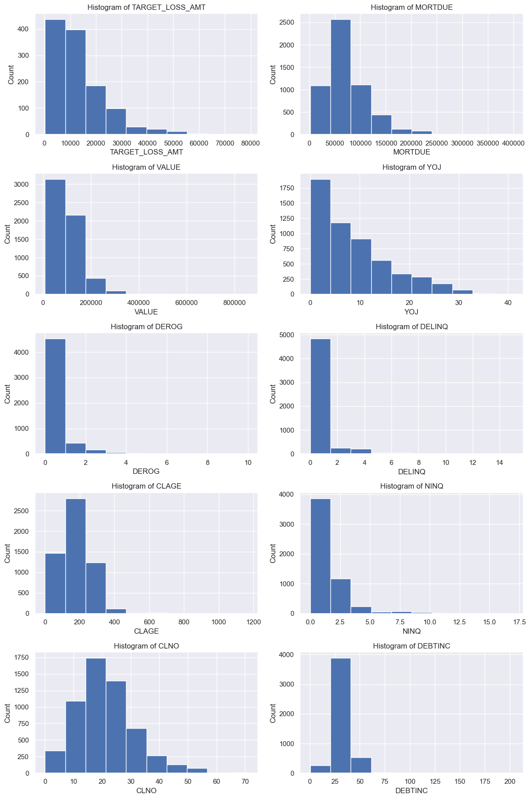

A collection of observations and interpretations based on the results of the analyses performed during the data preparation phase.
| Column | Non-Null Count | Dtype |
|---|---|---|
| TARGET_BAD_FLAG | 5960 | int64 |
| TARGET_LOSS_AMT | 1189 | float64 |
| LOAN | 5960 | int64 |
| MORTDUE | 5442 | float64 |
| VALUE | 5848 | float64 |
| REASON | 5708 | object |
| JOB | 5681 | object |
| YOJ | 5445 | float64 |
| DEROG | 5252 | float64 |
| DELINQ | 5380 | float64 |
| CLAGE | 5652 | float64 |
| NINQ | 5450 | float64 |
| CLNO | 5738 | float64 |
| DEBTINC | 4693 | float64 |
| RangeIndex: 5960 entries, 0 to 5959 | ||
| Data columns (total 14 columns): | ||
| dtypes: float64(10), int64(2), object(2) |
Observations:
TARGET_BAD_FLAG & TARGET_LOSS_AMT] and 12 other variables with information about the characteristics of the borrowers).TARGET_BAD_FLAG and LOAN).| Variable | count | mean | std | min | 25% | 50% | 75% | max |
|---|---|---|---|---|---|---|---|---|
| TARGET_BAD_FLAG | 5960.0 | 0.199497 | 0.399656 | 0.000000 | 0.000000 | 0.000000 | 0.000000 | 1.000000 |
| TARGET_LOSS_AMT | 1189.0 | 13414.576955 | 10839.455965 | 224.000000 | 5639.000000 | 11003.000000 | 17634.000000 | 78987.000000 |
| LOAN | 5960.0 | 18607.969799 | 11207.480417 | 1100.000000 | 11100.000000 | 16300.000000 | 23300.000000 | 89900.000000 |
| MORTDUE | 5442.0 | 73760.817200 | 44457.609458 | 2063.000000 | 46276.000000 | 65019.000000 | 91488.000000 | 399550.000000 |
| VALUE | 5848.0 | 101776.048741 | 57385.775334 | 8000.000000 | 66075.500000 | 89235.500000 | 119824.250000 | 855909.000000 |
| YOJ | 5445.0 | 8.922268 | 7.573982 | 0.000000 | 3.000000 | 7.000000 | 13.000000 | 41.000000 |
| DEROG | 5252.0 | 0.254570 | 0.846047 | 0.000000 | 0.000000 | 0.000000 | 0.000000 | 10.000000 |
| DELINQ | 5380.0 | 0.449442 | 1.127266 | 0.000000 | 0.000000 | 0.000000 | 0.000000 | 15.000000 |
| CLAGE | 5652.0 | 179.766275 | 85.810092 | 0.000000 | 115.116702 | 173.466667 | 231.562278 | 1168.233561 |
| NINQ | 5450.0 | 1.186055 | 1.728675 | 0.000000 | 0.000000 | 1.000000 | 2.000000 | 17.000000 |
| CLNO | 5738.0 | 21.296096 | 10.138933 | 0.000000 | 15.000000 | 20.000000 | 26.000000 | 71.000000 |
| DEBTINC | 4693.0 | 33.779915 | 8.601746 | 0.524499 | 29.140031 | 34.818262 | 39.003141 | 203.312149 |
Observations of the Statistical Description
TARGET_LOSS_AMT) was $11,003.00 (mean of $13,414.58)LOAN) is $16,300.00 (mean of $18,607.97), and the median amount of the mortgage still due is $65.019 (mean of $73,760.82)DELINQ) among the borrowing population is 0.25, with the highest number being 10.CLNO) among the borrowers is 20 (mean of 21.3)

TARGET_BAD_FLAG, since this is a binary indicator of loan default.


TARGET_LOSS_AMT, the distribution of the amount of money lost on the defaulted loan is very positively skewed.Class = JOB (The borrower's occupation)
| JOB | Probability of Loan Default |
|---|---|
| Mgr | 0.233377 |
| Office | 0.131857 |
| Other | 0.231993 |
| ProfExe | 0.166144 |
| Sales | 0.348624 |
| Self | 0.300518 |
| JOB | Average Loss Amount |
|---|---|
| Mgr | 14141.536313 |
| Office | 13475.304000 |
| Other | 11570.102888 |
| ProfExe | 14660.966981 |
| Sales | 16421.447368 |
| Self | 22232.362069 |
Observations
Class = REASON (The reason the borrower took out the loan)
| REASON | Probability of Loan Default |
|---|---|
| DebtCon | 0.189664 |
| HomeImp | 0.222472 |
| REASON | Average Loss Amount |
|---|---|
| DebtCon | 16005.163758 |
| HomeImp | 8388.090909 |
Observations
Variable = LOAN (The loan amount)
| TARGET_BAD_FLAG | Value of Loan |
|---|---|
| 0 | 19028.107315 |
| 1 | 16922.119428 |
| Correlation with Loss Amount | 83.71 % |
Variable = MORTDUE (The borrower's current outstanding mortgage)
Variable = VALUE (The value of the borrower's house)
Variable = YOJ (The number of years the borrower has been at their job)
Variable = DEROG (The number of derogatory marks on the borrower's credit record)
Variable = DELINQ (The number of delinquencies on the borrower's credit report)
Variable = CLAGE (The age of the borrower's line of credit)
Variable = NINQ (The number of credit inquiries the borrower has on their credit report within the last three years)
Variable = CLNO (Number of lines of credit)
Variable - DEBTINC (The barrower's debt-to-income-ratio)
==========================================
**We will use the second method of imputation discussed in the lectures (filling in missing with entries with the category "MISSING").
Missing Categorical Value Imputation for REASON variable:
Original variable = REASON
HAS MISSING
New (imputed) variable = IMP_REASON
New (flag) variable = M_REASON
Variable REASON has this many missing 252
Variable IMP_REASON has this many missing 0IMP_REASON
DebtCon 3928
HomeImp 1780
MISSING 252
Name: IMP_REASON, dtype: int64
Missing Categorical Value Imputation for JOB variable:
Original variable = JOB
HAS MISSING
New (imputed) variable = IMP_JOB
New (flag) variable = M_JOB
Variable JOB has this many missing 279
Variable IMP_JOB has this many missing 0IMP_JOB
MISSING 279
Mgr 767
Office 948
Other 2388
ProfExe 1276
Sales 109
Self 193
Name: IMP_JOB, dtype: int64
It is my hunch that for the numerical variables, VALUE, LOAN, and DEBTINC it would be best to fill in the missing values with the median of the groups in the JOB class. This is because the value of a person's home is likely to be related to how much they make and what their job is.
Therefore, it would make sense to fill in the missing values with the median of the group that the individual belongs to. The same logic applies to the LOAN variable--the more a person makes at their job, the more they will likely be able to barrow. I also believe that this same approach is appropriate for the DEBTINC variable.
For the rest of the numerical variables, I will fill in the missing values with the median of all entries within the field.
Missing Numerical Value Imputation for VALUE Based on JOB Class
Name: VALUE, dtype: float64
IMP_JOB
GROUP MEDIAN VALUE MISSING 78227.0 Mgr 101258.0 Office 89094.5 Other 76599.5 ProfExe 110007.0 Sales 84473.5 Self 130631.0 Original variable = VALUE
New (Flag) variable = M_VALUE
New (Imputed) variable = IMP_VALUE
Missing Numerical Value Imputation for LOAN Based on JOB Class
Name: LOAN, dtype: float64
IMP_JOB
GROUP MEDIAN LOAN MISSING 13400.0 Mgr 18100.0 Office 16200.0 Other 15650.0 ProfExe 17300.0 Sales 14300.0 Self 24000.0 Original variable = LOAN
New (Flag) variable = M_LOAN
New (Imputed) variable = IMP_LOAN
Missing Numerical Value Imputation for DEBTINC Based on JOB Class
Name: DEBTINC, dtype: float64
IMP_JOB
GROUP MEDIAN DEBTINC MISSING 30.311902 Mgr 35.661118 Office 36.158718 Other 35.247328 ProfExe 33.378041 Sales 35.764058 Self 34.830194 Original variable = DEBTINC
New (Flag) variable = M_DEBTINC
New (Imputed) variable = IMP_DEBTINC
.info() Table After Performing Missing Value Imputation of the Rest of The Numerical Variables
| Column | Non-Null Count | Dtype |
|---|---|---|
| TARGET_BAD_FLAG | 5960 | int64 |
| M_REASON | 5960 | int64 |
| IMP_REASON | 5960 | object |
| M_JOB | 5960 | int64 |
| IMP_JOB | 5960 | object |
| M_VALUE | 5960 | int64 |
| IMP_VALUE | 5960 | float64 |
| M_LOAN | 5960 | int64 |
| IMP_LOAN | 5960 | int64 |
| M_DEBTINC | 5960 | int64 |
| IMP_DEBTINC | 5960 | float64 |
| M_TARGET_LOSS_AMT | 5960 | int64 |
| IMP_TARGET_LOSS_AMT | 5960 | float64 |
| M_MORTDUE | 5960 | int64 |
| IMP_MORTDUE | 5960 | float64 |
| M_YOJ | 5960 | int64 |
| IMP_YOJ | 5960 | float64 |
| M_DEROG | 5960 | int64 |
| IMP_DEROG | 5960 | float64 |
| M_DELINQ | 5960 | int64 |
| IMP_DELINQ | 5960 | float64 |
| M_CLAGE | 5960 | int64 |
| IMP_CLAGE | 5960 | float64 |
| M_NINQ | 5960 | int64 |
| IMP_NINQ | 5960 | float64 |
| M_CLNO | 5960 | int64 |
| IMP_CLNO | 5960 | float64 |
| Range Index: 5960 entries, 0 to 5959 | ||
| Data columns (total 27 columns) | ||
| dtypes: float64(10), int64(15), object(2) |
.head() Preview of the Dataset after Completion of Imputation and One Hot Encoding
| 0 | 1 | 2 | 3 | 4 | |
|---|---|---|---|---|---|
| TARGET_BAD_FLAG | 1.000000 | 1.000000 | 1.000000 | 1.000000 | 0.000000 |
| M_REASON | 0.000000 | 0.000000 | 0.000000 | 1.000000 | 0.000000 |
| M_JOB | 0.000000 | 0.000000 | 0.000000 | 1.000000 | 0.000000 |
| M_VALUE | 0.000000 | 0.000000 | 0.000000 | 1.000000 | 0.000000 |
| IMP_VALUE | 39025.000000 | 68400.000000 | 16700.000000 | 78227.000000 | 112000.000000 |
| M_LOAN | 0.000000 | 0.000000 | 0.000000 | 0.000000 | 0.000000 |
| IMP_LOAN | 1100.000000 | 1300.000000 | 1500.000000 | 1500.000000 | 1700.000000 |
| M_DEBTINC | 1.000000 | 1.000000 | 1.000000 | 1.000000 | 1.000000 |
| IMP_DEBTINC | 35.247328 | 35.247328 | 35.247328 | 30.311902 | 36.158718 |
| M_TARGET_LOSS_AMT | 0.000000 | 0.000000 | 0.000000 | 0.000000 | 1.000000 |
| IMP_TARGET_LOSS_AMT | 641.000000 | 1109.000000 | 767.000000 | 1425.000000 | 11003.000000 |
| M_MORTDUE | 0.000000 | 0.000000 | 0.000000 | 1.000000 | 0.000000 |
| IMP_MORTDUE | 25860.000000 | 70053.000000 | 13500.000000 | 65019.000000 | 97800.000000 |
| M_YOJ | 0.000000 | 0.000000 | 0.000000 | 1.000000 | 0.000000 |
| IMP_YOJ | 10.500000 | 7.000000 | 4.000000 | 7.000000 | 3.000000 |
| M_DEROG | 0.000000 | 0.000000 | 0.000000 | 1.000000 | 0.000000 |
| IMP_DEROG | 0.000000 | 0.000000 | 0.000000 | 0.000000 | 0.000000 |
| M_DELINQ | 0.000000 | 0.000000 | 0.000000 | 1.000000 | 0.000000 |
| IMP_DELINQ | 0.000000 | 2.000000 | 0.000000 | 0.000000 | 0.000000 |
| M_CLAGE | 0.000000 | 0.000000 | 0.000000 | 1.000000 | 0.000000 |
| IMP_CLAGE | 94.366667 | 121.833333 | 149.466667 | 173.466667 | 93.333333 |
| M_NINQ | 0.000000 | 0.000000 | 0.000000 | 1.000000 | 0.000000 |
| IMP_NINQ | 1.000000 | 0.000000 | 1.000000 | 1.000000 | 0.000000 |
| M_CLNO | 0.000000 | 0.000000 | 0.000000 | 1.000000 | 0.000000 |
| IMP_CLNO | 9.000000 | 14.000000 | 10.000000 | 20.000000 | 14.000000 |
| z_IMP_REASON_DebtCon | 0.000000 | 0.000000 | 0.000000 | 0.000000 | 0.000000 |
| z_IMP_REASON_HomeImp | 1.000000 | 1.000000 | 1.000000 | 0.000000 | 1.000000 |
| z_IMP_REASON_MISSING | 0.000000 | 0.000000 | 0.000000 | 1.000000 | 0.000000 |
| z_IMP_JOB_MISSING | 0.000000 | 0.000000 | 0.000000 | 1.000000 | 0.000000 |
| z_IMP_JOB_Mgr | 0.000000 | 0.000000 | 0.000000 | 0.000000 | 0.000000 |
| z_IMP_JOB_Office | 0.000000 | 0.000000 | 0.000000 | 0.000000 | 1.000000 |
| z_IMP_JOB_Other | 1.000000 | 1.000000 | 1.000000 | 0.000000 | 0.000000 |
| z_IMP_JOB_ProfExe | 0.000000 | 0.000000 | 0.000000 | 0.000000 | 0.000000 |
| z_IMP_JOB_Sales | 0.000000 | 0.000000 | 0.000000 | 0.000000 | 0.000000 |
| z_IMP_JOB_Self | 0.000000 | 0.000000 | 0.000000 | 0.000000 | 0.000000 |